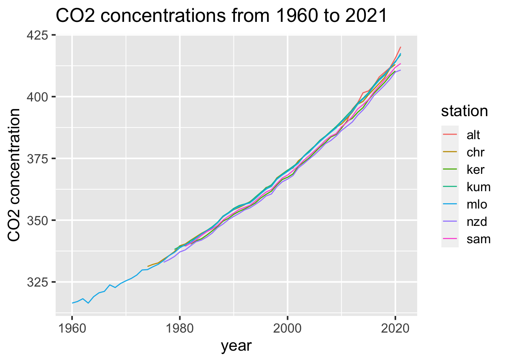

Chapter 5 Results
5.1 CO2 concentration changes by time

From this graph, we can conclude that there are increasingly amount of C02 concentrations for all the stations on the whole year by year over time. Sometimes we can observe a striking valley, such as in 2001 and 2020 for Christmas Island Station, which may be caused by missing data.
5.2 CO2 concentration among different stations

From this graph, we can conclude that the median monthly CO2 concentration values are similar accross all the stations except for the Alert Station. The Alert Station has a median of more than 400, while the median of others are approximately between 350 and 375. That’s because the Alert Station started to record data only from 2011, so it has a small range. The highest monthly CO2 concentration also comes form the Alert Station, which is almost 425. Besides the Alert Station, Cape Kumukahi Station and American Samoa Station have higher monthly CO2 concentration than Kermadec Island Station than the other three stations. The data for Mauna Loa Observatory is the most sparse because it is the earliest station to record data, and that’s why its median is the lowest. There are no outliers.